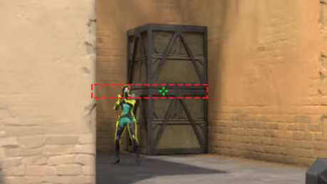

Gamesense is an extremely important part of mechanical skill in shooter games. If you solely grind aim trainers, you will hit a ceiling, and fast. That is because aim only matters if you are at the right place at the right time. That is gamesense.
Crosshair placement
Crosshair placement is placing your crosshair or pointing your weapon barrel at the right place. It is also heavily dependant on weapon, reaction time and where you are on the map.
Weapons heavily affect how you use crosshair placement. Generally speaking, you should be aiming at the chest area, as that is where you have the highest amount of chant of hitting as many pellets as possible. This is assuming the shotgun shells have spread. With rifles, pistols, or weapons alike, it is recommended to aim at head level. This is so you can maximize damage on first bullet, and then track the head if needed afterwards.
Sniper rifles can work quite differently, as they can do different damage. Some snipers can one tap on body, some can barely one tap on headshot. But you can still follow the shotgun rules on stronger snipers and the rifle / pistol rule on weaker snipers.

Reaction time
Reaction time is also an important aspect of gamesense. The more you play a game, the faster you get at seeing what's happening around you. Eventually it becomes automatic, but something that will never be fully automatic is holding an angle. When you hold an angle, you need proper reaction time in accordance to where your crosshair is to be able to give yourself the highest amount of advantage in the fight.